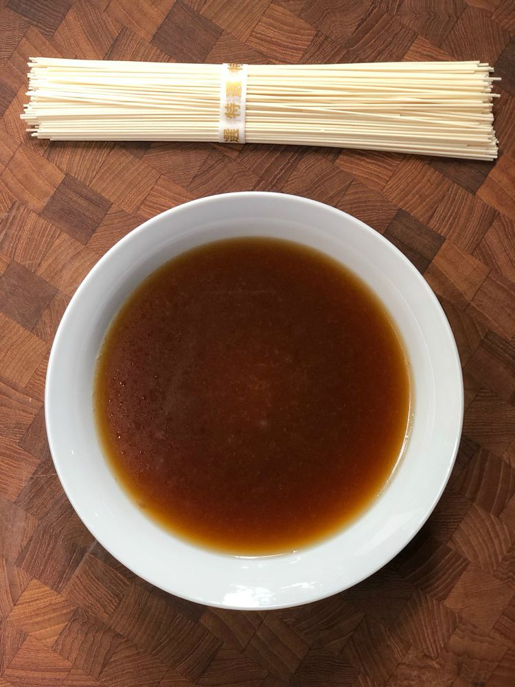

Tonkotsu Ramen Broth Recipe

Ever want to have a whiff of the rich creamy soup a bowl of tonkotsu ramen only Kyoto could provide?
What if you could make this in your own home?
This recipe will show you how to make authentic tonkotsu broth in under 2 hours.
Ingredients
- 1 pound pork bones, with meat
- 2 leeks, chopped
- 1 onion, chopped
- 5 cups water
- 1/2 teaspoon salt
- 1 teaspoon dashi
- 1 tablespoon soy sauce
- 1 tablespoon shiro miso
Steps
- Place pork bones in large pot to boil. Be sure to skim the scum that surfaces at the top.
- Add the soup mixture into pressure cooker pot. Add the leeks, onion, and garlic.
- Let instant pot boil for 2 hours.
- Open pot and add 4 cups of water. Let boil for 2 more hours.
- Remove lid and add salt & pepper to taste.
Go Back